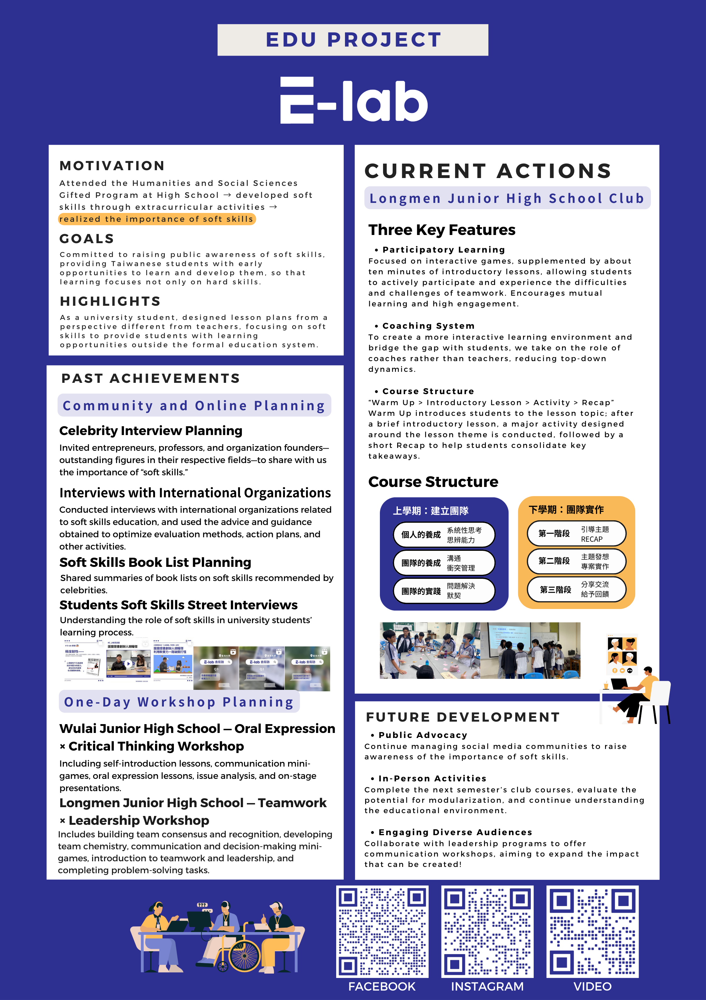

E-lab
Committed to raising public awareness of soft skills, providing Taiwanese students with early opportunities to learn and develop them, so that learning focuses not only on hard skills.

Full Project Report